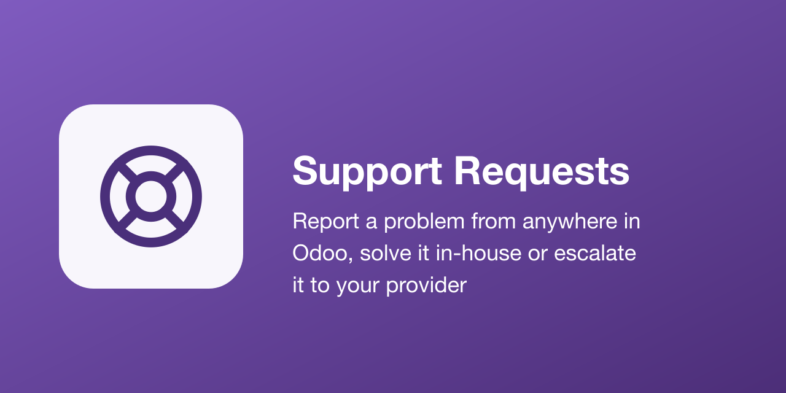

Anyone can report a problem from the user menu, with the page they were on filled in for them. The people who look after support solve it in-house, or send it to their Odoo provider by email, and the provider's replies come back into the request.
In the user menu, everywhere: what is wrong, what they were trying to do, how urgent it is.
Support coordinators get a to-do, take the request, and solve it or pass it on.
One click sends the request and its details to the provider; their replies land back on the request.
People see their own requests; coordinators see them all.
This module is free. Help installing, setting up or using it is available from Meskis Works with a support contract: sales@meskis.net.